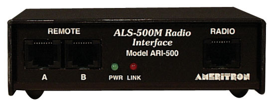
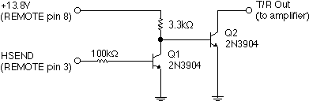
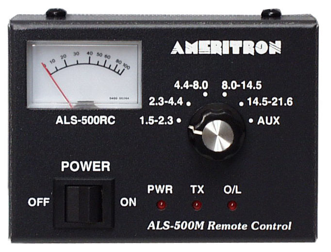
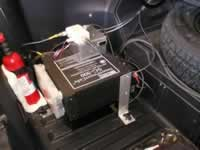

Last Modified: August 29, 2014
Contents: Basics; Square Law Function; Antenna Consideration; Power consideration; Second Battery Info; Drive Level; Band Selection; Keying Interfaces; Remote Controls; Mounting; Odd & Ends;
An amplifier is the last upgrade you should make. The antenna is the first!
 If you've wrung out every last drop of efficiency from your antenna, an amplifier is perhaps the next step, but it isn't a slam-dunk in any respect! You have to pay attention to a lot of details, but that is not all. You also have to control the amplifier (usually remotely), provide it with a relatively stiff source of power, correctly mount it, and set up the correct drive parameters.
If you've wrung out every last drop of efficiency from your antenna, an amplifier is perhaps the next step, but it isn't a slam-dunk in any respect! You have to pay attention to a lot of details, but that is not all. You also have to control the amplifier (usually remotely), provide it with a relatively stiff source of power, correctly mount it, and set up the correct drive parameters.
Most manufacturers make remote control easy for you, but you don't always need what they say you need. You do need to provide adequate wiring which might require a second battery, (the preferred method) rather than using very large wire to the main (SLI) battery. They also need to be mounted securely, and in an area with adequate ventilation. Emphasis needs to be put on ventilation, as far too many try to hide their amps under seats, and in cubby holes. It's important to remember, during SSB transmission, a 500 watt PEP amplifier will dissipate approximately 250 watts of heat!
Drive level is an important consideration too, as most amplifiers only require 50 to 65 watts PEP for full output, and some as low as 25 watts PEP. Overdriving them is a sure fire way to create excessive levels of IMD, and shortened final life. Read that as expensive!
It should be noted that running high power isn't an inexpensive proposition. A typical installation, including a second battery, heavy-duty wiring, and a few unforeseen pieces of hardware, can easily run to over $4,000. A few even double that! Most important is the need for a really excellent, properly mounted, antenna!
In the previous section is this excerpt: ...but it isn't a slam-dunk in any respect! The Square Law function is one reason why this statement is true!
The Square Law Function (SLF) simply refers to an electronic device which produces an output voltage proportional to the square of its input voltage. The SLF applies to every circuit incorporating a solid state junction (I.E.: transistor or diode). Since not all of us are RF engineers, the SLF needs to be defined in simpler terms.
Assuming you have a slight RFI ingress problem running just 100 watts PEP, and you decide to add a 500 watt PEP amplifier. This adds ≈6.9 dB to your output level (assuming nothing else changes). That almost insignificant RFI problem now increases by 13 dB! In other words, your slight RFI problem caused by an inattention to proper bonding and antenna mounting techniques, has turned into a major issue!
As the age-old cliche goes, forewarned is forearmed. This behooves anyone contemplating the addition of an amplifier, to correct any shortcomings beforehand, whatever they may be!
 Mating an amplifier to a cheap and/or an incorrectly mounted antenna, is counterproductive. In fact, most mobile installations would benefit more by properly mounting a decent quality antenna, than one will ever get from an amplifier. Whatever antenna you choose, it must be capable of handling a true 500 watts dead carrier! Since far too many manufacturers stretch the truth, here are the antennas to avoid: Any vinyl covered one especially those with large metal end caps; Any screwdriver antenna with more than 10 turns per inch, or smaller than 2 inches in diameter, or wound with less than size 12 awg wire.
Just as important, is not going too big! Really large diameter coils (>3.5 inches) have excessive distributed capacitance, especially when they also have large metal end caps and/or shorting plungers.
Mating an amplifier to a cheap and/or an incorrectly mounted antenna, is counterproductive. In fact, most mobile installations would benefit more by properly mounting a decent quality antenna, than one will ever get from an amplifier. Whatever antenna you choose, it must be capable of handling a true 500 watts dead carrier! Since far too many manufacturers stretch the truth, here are the antennas to avoid: Any vinyl covered one especially those with large metal end caps; Any screwdriver antenna with more than 10 turns per inch, or smaller than 2 inches in diameter, or wound with less than size 12 awg wire.
Just as important, is not going too big! Really large diameter coils (>3.5 inches) have excessive distributed capacitance, especially when they also have large metal end caps and/or shorting plungers.
Here's a rule of thumb applicable to any brand HF mobile antenna, no matter what other attribute it may, or may not have. If the unmatched input SWR is less than 1.6:1 on any band (with the possible exception for 12 and 10 meters), then upgrade both the antenna and/or the mounting scheme before you even think about an amplifier! To wit: Trunk lip mounts, license plate mounts, cheap ballmounts, mag mounts (no matter how many magnets they have), are all suspect mounting systems. Remember too, it is the metal mass directly under the antenna that counts, not the mass along side. This virtually eliminates trailer hitch mounts.
Remotely tuned antennas, like the Scorpion 680 series (shown right), are very popular. A large portion of the users of these antennas, purchase devices to automatically change bands, either by pushing a button or by using the radio's built in controls. Some count the turns the adjustment screw makes, and some rely on the SWR in one form or another. Both controller types suffer from RFI ingress which is exacerbated by high output power levels (I don't care what their brochures say).
The Antenna Controllers article covers the requisite motor lead choke in detail. The follow up article, How To Wind A Choke, explains the exact winding procedure. This choke, and its requisite impedance, is important no matter the power level. It is doubly important when an amplifier is used, and it is one aspect of high power which cannot be overlooked!
Common mode current can suddenly become a big problem after installing an amplifier. Proper choking of common mode is an absolute must, even if no signs of it are readily apparent!
If your antenna is mounted low (trailer hitch and frame extension mounts are examples), a large portion of the RF current is forced to flow (return to the source) through the surface under the vehicle, rather than through the vehicle's superstructure. This fact greatly increases ground losses, and the incidence of common mode current! Remembering that ground losses (typically) dominate the efficiency equation, and minimizing them is well worth the effort. It should also be mentioned, that adding an amplifier does nothing for the received signal+noise/noise ratio (SNR), but proper mounting does! In other words, if you can't hear them, it doesn't matter if they can hear you!
Readers should peruse the Wiring, and Alternator articles, and this section explains why you should.
The input power of a typical solid state, 500 watt PEP rated amplifier, is approximately 1,000 watts. At 13.8 volts (assuming no voltage drop), the peak current is ≈75 amps. Add in the nominal current draw of the driving transceiver, and the peak current draw is ≈90 amps. The rule of thumb is to limit voltage drop to less than .5 volts. Depending on whether a second battery is used, the amperage rating of the alternator, the wire feeding the amplifier may have to be as large as 1/0! When the voltage does sag (a frequent problem with single-battery installations), it can cause another problem.
Most miniaturized radios are designed to operate on 13.8 VDC. When the voltage drops below a certain operational level, nominally 11.6 VDC, they have a tendency to just shut down! One way around this is to use a battery booster on the radio. There are several designs for them on the net, and at least three commercial units aimed at amateurs. There is a review of three brands in the November 2008 issue of QST. However, let's don't get into a big hurry!
Battery boosters have their place, especially in portable and field-day operation, as long as we watch just how far we discharge the battery. When used mobile, they are just one more device to fail. A much better solution is to adequately wire high-power installations, even if that requires a second battery.
Most late-model vehicles come factory equipped with an alternator of at least 100 amps peak, and a few are as large as 250 amps. Determining if you have enough capacity isn't all that difficult if you use some basic logic. If your car has a rear window defroster, you have about a 30 amp reserve when it is not in use. This is enough for any of the late model 100 watt transceivers like the FT100, FT857, IC706, and even the 200 watt TS480.
Add an amplifier, and the peak amperage is about 90 amps as noted above. Average draw will hover around 60 amps. This requires a reserve of at least 70 amps to error on the safe side. If your car has heated seats and mirrors in addition to the rear window defroster, you might have enough. Consider too, if you use any form of speech compression, the requisite average power increases, which further taxes the electrical system. If there is a rule of thumb, it is this: Don't attempt to add an amplifier if the vehicle in question, has an alternator with a rating of less than 90 amps, especially if you live in the snow belt.
Batteries are the most often overlooked aspect of high-power mobile operation. It is not uncommon to use a second, trunk-mounted battery, but the type to use with a mobile amplifier is in debate. All too often, folks incorrectly select a deep-cycle marine battery (a classic misnomer) for this application. Marine batteries are designed to sit for long periods of time (up to two years) without recharging, yet hold at least 80% of their charge. SLI (Starting, Lights, Ignition) batteries are a better choice as they are designed to provide large amounts of energy for short periods of time. Remember, it is the alternator which is powering the amplifier. The battery is just acting as a buffer.
You should use a battery of the exact type as the SLI battery. That is to say, a lead acid. The ampere-hour rating should be at least as large as the vehicles existing SLI battery, and perhaps larger if you have the space. Age isn't too important, but it should be in good working condition. If it is going to be mounted in an enclosed trunk area, you should select an AGM type which is sealed, and will not out gas under normal operating conditions. Remember, the battery is acting as a buffer to handle the peaks while the alternator is doing the hard work. So called deep cycle batteries typically cannot supply the necessary peak current for this type of operation. If you need more information on which type to use, peruse these two sites: Exide.com and Optima.com. Make sure you look at both the starting amps, and the reserve capacities of the various types. It won't take you long to figure out the difference in the three basic types (SLI, Reserve Capacity, Marine), and why each one has a specific intended use.
 Here are a few more caveats you should consider. Battery isolators have their place. For example, if you are charging reserve capacity (RC) batteries from an vehicle alternator (a common occurrence in RV's) they make sense. They protect the RC from over charging, and they protect the starter (SLI) battery from discharging. However, in a mobile amplifier scenario, forget about them! This goes for heavy-duty isolation relays as well. Their complexity outweighs any benefits they may offer. If you want to protect your vehicle battery from discharge, don't run your amplifier unless the engine is running. Remember, this isn't long-term portable operating, it is high power while under way.
Here are a few more caveats you should consider. Battery isolators have their place. For example, if you are charging reserve capacity (RC) batteries from an vehicle alternator (a common occurrence in RV's) they make sense. They protect the RC from over charging, and they protect the starter (SLI) battery from discharging. However, in a mobile amplifier scenario, forget about them! This goes for heavy-duty isolation relays as well. Their complexity outweighs any benefits they may offer. If you want to protect your vehicle battery from discharge, don't run your amplifier unless the engine is running. Remember, this isn't long-term portable operating, it is high power while under way.
Some manufacturers recommend batteries with a large Reserve Capacity (YellowTop® for example) for this applications, sighting ICAS use (Intermittent Commercial, Amateur Service). What is needed here, is a battery with a large peak rating, hence the need for a RedTop® battery. You can use a YellowTop® too, but it will have to be sized larger (typically 20%) for the same peak amperage capability.
Any trunk-mounted battery should be installed in a battery box and properly restrained. The rule of thumb for battery restraints is 6Gs lateral and 4Gs vertical. The last thing you want to happen is to have a 60 pound battery flinging acid all over your trunk! If you use a flooded type battery, the box should be vented to the outside. If this isn't possible, you should use a sealed AGM battery such as the Optima Redtop®. While they cost about twice as much as a standard car battery, they quickly solve the vent problem. The good part is, they last about 3 times longer.
Made-for-mobile amplifiers typically have matching networks made up of swamping resistors which literally turn drive power into heat! It should be obvious that overdriving can and does result in damage to these resistors. If the input circuitry is damaged, the resulting overdrive can cause the finals to fail regardless of any built in protection scheme. This is an especially important point because some of the finals used in legacy (no longer made or supported) amplifiers are nonobtainium at any price! The only solution is to watch the amount of drive power we use (≈50 to 65 watts), and how me measure it, if we're to prolong amplifier life, and keep the level of IMD reasonable.
Thankfully there is a way to know how much drive power is required by using a peak-reading wattmeter. It is also necessary to use a dummy load, not the antenna as an impedance mismatch can cause incorrect readings. The engine should also be running, and at this point the battery voltage measured at the back of the amplifier should be 13.8 to 14 volts. If it isn't, you've got a problem which need to be rectified before proceeding.
Peak (SSB) power output of a solid state transceiver will be approximately the same as it is in CW mode, but there may be a small difference due primarily to power supply dynamics (voltage stability under peak load). However, average power out is a whole new ball game as variations in voices patterns, meter damping, microphone settings, and other factors affect the readout. Don't be surprised if your barefoot transceiver reads just 25 watts on a non peak-reading wattmeter, as the peak will still be ≈100 watts. If it reads more than say 40 or 50 watts, either your microphone gain is too high, or you have the speech compressor turned on (if you do, read this article). Incidentally, running compression while in motion will garner you a lot of bad reports about background noise. It also adds greatly to the electrical requirements which are most-likely already stressed.
Before switching on the amplifier, it is important to know just how much drive the amplifier needs to produce its practical SSB output (never its full-factory rating). The best output level is not solely dependent on the brand or power rating of the amplifier. Electrical system dynamics, wiring size, whether or not you use a second battery, your transceiver's power requirements, alternator size, and your voice pattern all affect it.
Using CW to set up the drive level is counterproductive as most electrical systems cannot keep up with 90 amp loads for more than a few seconds. This is why we use SSB peak power, not CW, to adjust the drive level. Obviously, you'll need to turn down the drive power. Icom, for example, makes this easy as there are separate power levels for HF, 6 meters, and for VHF/UHF. The 706 adjustment goes from Lo 2, 3, 4, 5, 6, 7, 8, 9, to Hi, and the 7000 is in one percent steps. On the 7000, the numbers are very close to the actual power out, with 30% equaling ≈30 watts. However yours is set up, you should start with 20 watts or so, and work up. Other makes of transceivers have similar adjustments.
 What we're trying to do here is to increase the drive power incrementally to a point where more drive does not produce a corresponding change (ratio) in output power. Then we'll back down the drive one notch. We're not after the absolute maximum output! Instead we're after a reliable output as free from IMD as we can get. After all, no one can tell the difference on the air between 400 watts out and 450 watts out except for the extra splatter you cause by over driving your amplifier. Remember this, we don't have ALC to watch our back, so the key word is moderation.
What we're trying to do here is to increase the drive power incrementally to a point where more drive does not produce a corresponding change (ratio) in output power. Then we'll back down the drive one notch. We're not after the absolute maximum output! Instead we're after a reliable output as free from IMD as we can get. After all, no one can tell the difference on the air between 400 watts out and 450 watts out except for the extra splatter you cause by over driving your amplifier. Remember this, we don't have ALC to watch our back, so the key word is moderation.
Your speech patterns are important here, and rather than say "test, test", use your call. "This is XYZ testing" is a good start. Whatever you do, don't whistle! Key up and slowly start increasing the input power until the output power no long increases incrementally. Let me explain this another way. Assuming 30 watts in is 300 watts out, and 40 watts in is 400 watts out, and then increasing the input to 50 watts only increases the output to 450 watts, means you're into the non-linear portion of the amplifier's power curve (represented by the red line in the chart). This is what we're trying to avoid as non-linearity equals excessive IMD! Splatter in other words.
Depending on the amplifier, your electrical system, and the transceiver you use, actual PEP output from the transceiver (represented by the blue line in the chart) may be as low as 40 watts, or perhaps as much as 70 watts, but will never be full power! Once this point is found, reduce the power to the next lower setting, or by at least 10%. The peak power out will be from 350 to 450 watts, perhaps a little higher if you electrical system is stiff. And please, don't drive your amplifier harder just because it is rated higher. Watch your microphone gain too. We're all guilty of getting excited about that rare DX station and yelling into the microphone.
Once you've finished setting the drive level, switch from the dummy load to your antenna. Don't be surprised if the peak reading is lower or higher, as any HF mobile antenna will always have some reactance, even at resonance, which will effect the reading (you did match the antenna didn't you?). Therefore, increasing the drive from where it was set previously, is a prescription for splatter.
Operating responsibly is every amateur's duty regardless of where his/her station is located. Besides, good clean signals always garner more contacts than over modulated, non-linear ones will. Besides, you fellow amateurs will be happier too.
If you own an SG500, the best way to tell if you're overdriving the amplifier is to key up, and listen for any change in the receive level. If it suddenly increases about a second after key up, it means that the automatic input attenuator has been tripped. This occurs because the attenuator is before the transfer relay (contrary to the schematic), and it has a built-in, non adjustable delay. You could just leave your diver power at 100 watts, but the peak power output once the attenuator kicks in, is just 400 watts. However, setting the drive power just to a point just before the attenuator kicks in, will result in about 500 watts PEP.
If you own an ALS-500, don't expect the output power to be a full 500 watts PEP. Following the aforementioned setup routine, the crossover point averages about 425 to 450 watts PEP depending on the input voltage, and that's as hard as you want to drive one, excessive IMD levels notwithstanding! If you look at the input schematic, you'll notice that the circuitry contains 12, 100 Ω, metal film swamping resistors in a series/parallel arrangement. Excessive drive will cause these resistors to eventually increase in value, increasing the chances of blowing the finals.
Lastly, with few exceptions, most designed-for-mobile transceivers exhibit a power spike on keydown, often exceeding the power output rating of the transceiver. The condition is exacerbated at low drive levels, and can be of a concern when driving amplifiers which do not require a full 100 watts of drive—the case for every currently-available mobile amplifier! While the issue typically doesn't have any ill effects.
You'd think with all of the modern, computer-controlled devices, someone would come up with an easy way to automatically select the proper amplifier bandpass filter by reading data from the transceiver. Well, that's sort of happened. For example, THP's HL-450 (now out of production) interfaces with most modern mobile transceivers via their respective data ports; Icom's CI-V port is an example. When you change bands, the amplifier follows.
SGC takes a little different approach with their SG500. Although the ALC is worthless (it is positive going after all), the amplifier sports automatic band selection, and even has RF keying. Speaking from experience, automatic band selection (correct bandpass filter actually) is a Godsend, if the amplifier doesn't have a direct data-reading interface. If you use manual control for band selection, no matter how careful you are, sooner or later, you'll transmit into the wrong bandpass filter, and you'll be in for an expensive fix!
As for RF keying, even in a VHF amplifier, it isn't the stuff of champions. It is always problematic, due in part to hot switching of the transfer relay(s). The unkey delay is never correct (!), and if the amplifier has a preamp (like most VHF amps do), sooner or later you'll be replacing the preamp transistor (or chip). Unless there is no other way, never rely on RF keying of any amplifier, HF or otherwise!

The Ameritron ARI-500M (attempts to) avoid this pitfall by ignoring the input data when the key line is low (radio in transmit mode). There is one small caveat if you use an Icom IC-7000. To wit, you'll have to make the internal mod as described on page 140 of the owners manual. Otherwise, there will be no band select output signal on pin 5 of the accessory socket. What ever you do, mount the ARI-500 where it belongs, and that's next to the amplifier, not at the operating position.
For my money, either SGC's or THP's approach is the best; let the amplifier decide what band is in use. If there is a down side, it is the slight delay the internal program(s) need to decide which is the right bandpass filter.
 Unlike a regulated power supply, mobile input voltages vary from 11 VDC to 14.5 VDC. This is true whether or not you run an amplifier; a second battery notwithstanding. This fact causes the band select output signal (0 to 8 volts depending on the band in use) and/or the data lines to vary. This causes band data reading devices to select the incorrect bandpass filter (not something you want to happen). Even then, a battery booster (like the W4RRY unit left) may be required. This said, it is best to avoid such devices, unless there is no other way to address the problem.
Unlike a regulated power supply, mobile input voltages vary from 11 VDC to 14.5 VDC. This is true whether or not you run an amplifier; a second battery notwithstanding. This fact causes the band select output signal (0 to 8 volts depending on the band in use) and/or the data lines to vary. This causes band data reading devices to select the incorrect bandpass filter (not something you want to happen). Even then, a battery booster (like the W4RRY unit left) may be required. This said, it is best to avoid such devices, unless there is no other way to address the problem.
Whether you need a keying interface will depend on both the amplifier, and transceiver in question. For example, the Alinco series, Yaesu's FT857D, FT100D & FT450D, and the Kenwood TS48o, will directly key an ALS-500. However, the Icom IC-706 and IC-7000 will require an interface due to their low interface requirements (20 mils @ 8 vdc; 200 mils @ 8 vdc, respectively). The SG500 can be keyed by any transceiver which grounds the keying line on transmit, as it keying current is a scant 2 ma.
 Assuming you need an interface, and you don't care to build one, there are several alternatives. The first is the AmpKeyer which has three separate outputs to match any amplifier. At $50 (plus shipping) it is a bargain considering its capabilities. Details are on their web site.
Assuming you need an interface, and you don't care to build one, there are several alternatives. The first is the AmpKeyer which has three separate outputs to match any amplifier. At $50 (plus shipping) it is a bargain considering its capabilities. Details are on their web site.
 Ameritron (MFJ) makes the ARB-704 amplifier interface which retails for $60. Both of these units work on nominal 12 VDC.
Ameritron (MFJ) makes the ARB-704 amplifier interface which retails for $60. Both of these units work on nominal 12 VDC.

 By the way, Bob's interface can be adapted to a Yaesu FT-857, and a bunch of others. All it requires is power, ground, and a line that goes to ground on transmit. On an Icom, that is HSEND, and on a Yaesu, it is TX GND.
By the way, Bob's interface can be adapted to a Yaesu FT-857, and a bunch of others. All it requires is power, ground, and a line that goes to ground on transmit. On an Icom, that is HSEND, and on a Yaesu, it is TX GND.
Or, if you want one in kit form, Ham Gadgets Universal Keying Adapter 2 (at left) might be the answer. For just $20, about that many minutes to assemble, and you're in business. It'll interface with almost any transceiver, and key just about any amplifier. It does require a nominal 12 vdc, but that can safely be taken from the radio accessory socket as the current requirement is very low. Check their web site for details. The owner, Dale Botkin, is NØXAS.
For example, the SGC SG500 can be keyed directly by all of the popular mobile transceivers

The Metron 1000B was one of the first HF mobile amplifiers to have remote control. It was simply a rotary switch to select the correct bandpass filter, an on/off switch, and an LED to indicate an on-line condition. It also had an input for the PTT control. Just about every amplifier made since has had some form of remote control. What's more, they sport about the same controls.However, Ameritron has taken a different tact, and added transmit and overload LEDs, and an ammeter (should have been a voltmeter). It is almost 5 by 7 inches, and about 2 inches deep including the mounting bracket. The point being, if you had a tough time finding room for your remote transceiver head, where are you going to find room for this box? What ever happened to the KISS design scenario? So the question remains, do you need all of this stuff? The simple answer is no, but you have to be willing to dig out the old soldering iron. Just for the record, the SG500's filter select will need to be set on automatic, and the ALS-500 will require ALS-500M listed above.
 Both the SG500 and ALS-500 manuals explain the basic operation, and how the on/off is controlled. In both cases, all you need is a four wire interface; two for the power, and two for an on-line LED. If you add a (Datel) voltmeter as I did, you'll also need a 5th wire for the ground.
Both the SG500 and ALS-500 manuals explain the basic operation, and how the on/off is controlled. In both cases, all you need is a four wire interface; two for the power, and two for an on-line LED. If you add a (Datel) voltmeter as I did, you'll also need a 5th wire for the ground.
The top switch turns the amplifier on and off, as indicated by the violet LED. The other switches the IC-7000's video out over to the TVandNav2Go, which displays the front panel on the Navi screen. When moved to the rear, it switches the remote antenna relay over to 6 meters. By the way, that's a Hammond aluminum box, and is available from Mouser and Digikey.
 The wiring is straight forward, as you can tell by looking at the schematics which comes with most amplifiers. Each one is slightly different in its wiring scheme. The one at the left is for an SGC SG500 (clicking on the image will show it full size). The resistor value is up to you. The SG500's internal resistor is 2.2k Ω, and results in the LED being rather bright for night time use. I used a 3.3k (5.5k total), on a high-output violet LED, and it is just about right. By the way, the Mouser part number for the header plug is 571-87499, and the pins are part number 571-6-12316-4.
The wiring is straight forward, as you can tell by looking at the schematics which comes with most amplifiers. Each one is slightly different in its wiring scheme. The one at the left is for an SGC SG500 (clicking on the image will show it full size). The resistor value is up to you. The SG500's internal resistor is 2.2k Ω, and results in the LED being rather bright for night time use. I used a 3.3k (5.5k total), on a high-output violet LED, and it is just about right. By the way, the Mouser part number for the header plug is 571-87499, and the pins are part number 571-6-12316-4.
Some might argue that you need all the other indicators, and that is not the case. If the on-line LED is lit, the voltmeter registers the heavy load, so you don't need anything else, especially an ammeter that won't tell you anything of value. While I'm on the subject of voltmeters. The ones installed on some GM vehicles are nearly useless. What's more, they measure the voltage at the alternator pickup point, which won't tell you anything about the voltage at the input to the amplifier.
I just mentioned that an ammeter won't tell you anything of value. The main reason is they can't measure peak amperage, and they're typically too slow to measure average current. Most external ones require a current shunt. While the voltage drop across the shunt is small, it is yet another interconnection which can fail. In all fairness, the ALS-500 doesn't use a current shunt, per se. Rather the power cabling passes behind the meter and acts like a shunt. As a result, the accuracy is so poor, it is virtually worthless.
Argue as you may, one item you don't need in a mobile installation is a wattmeter and/or SWR bridge! You might need one to set things up the first time, but it sure doesn't need to be installed 24/7/365! It is just another device to find space for, and one that won't tell you much until it's too late. This said, if you manually control your screwdriver antenna, then use the SWR readout built into your transceiver.
 As noted above, the SG500 can be remotely controlled. Whether you opt for the factory remote control, or you build one, there is one important caveat. Power for the remote control is taken from a four pin header plug. Pin four of that header plug is supply voltage. Although that pin is protected by an internal 5 amp fuse, if you short the pin to ground, a circuit trace will fail before the fuse opens. Thus, extra care needs to be taken to make sure this pin is not shorted to ground as the repair is both tedious, and time consuming. It's expensive too if the factory does the work! The best thing to do, is install a one amp ATC fuse in the power lead (pin 4) as close to the amplifier as possible.
As noted above, the SG500 can be remotely controlled. Whether you opt for the factory remote control, or you build one, there is one important caveat. Power for the remote control is taken from a four pin header plug. Pin four of that header plug is supply voltage. Although that pin is protected by an internal 5 amp fuse, if you short the pin to ground, a circuit trace will fail before the fuse opens. Thus, extra care needs to be taken to make sure this pin is not shorted to ground as the repair is both tedious, and time consuming. It's expensive too if the factory does the work! The best thing to do, is install a one amp ATC fuse in the power lead (pin 4) as close to the amplifier as possible.

Obviously, remote controlled amplifiers can be mounted in the trunk or other out of the way location. This complicates wiring, but if a second battery is used, the I2R losses will be reduced. Wherever you mount your amplifier, mount is solidly! It pays to remember that some amplifiers weigh as much as 25 pounds, so simple straps and bungie cords won't do the trick.
Wherever you mount your amplifier, it should be in an area with good ventilation, and out of the direct sun light. If you use the trunk, remember it is enclosed, and additional ventilation may be needed, especially in the desert southwest.
If your purchase choice was (is) an SGC SG500, bite the bullet and purchase the fan kit as well. It not only provides an extra measure of cooling, the heavy aluminum it is constructed from, allows you to drill and tap it. In this installation, the main body of a IC-7000 is bolted to the fan assembly, as are the mounting flanges as shown in the left photo.
Some amplifiers, like the Metron, don't come with cooling fans, so adding a muffin fan or two is a smart move. It should also be noted, that overdriving an amplifier will increase the heat dissipation, as will the use of speech compression. Both scenarios should be avoided.
Every piece of hardware you install, is just one more failure point. They always add complexity to the requisite wiring, and most importantly, one more place for RFI to sneak in! And speaking of wiring; it appears amateurs would rather bundle up extra lengths of wire, rather than properly shortening, or building control cables which fit neatly into place. You can get away with this while running low power, but as the power level increases, sloppy work will add all manner of RFI and ground loop problems. As Einstein once said; Any intelligent fool can make things bigger, more complex, and more violent. It takes a touch of genius—and a lot of courage—to move in the opposite direction.
The real wiring consideration is the DC cabling, and not necessarily the coax. Running high power in a mobile doesn't dictate the use of RG8 sized coax! There's nothing wrong with using RG8, it is just a lot harder to work with. RG8X is certainly capable of handling the power, as is any good grade of RG58, as long as the runs are short (<10 feet). What's more, it is easier to choke off common mode when using RG8X, than it ever will be when using RG8 sized coax.
If you decide to try your hand at high power mobile, keep these items in mind when shopping. The amplifier should be fully remotable, easily reset in case of thermal or drive overload, your vehicle's electrical system should be up to the task, and your antenna installation should be first class.
{kind=link}
{kind=link}
{kind=link}